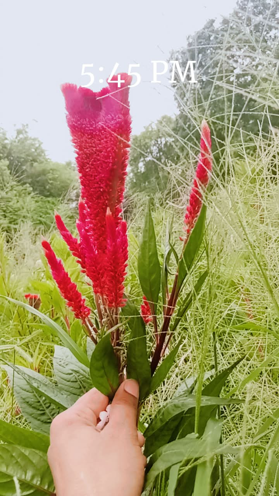

Zoo
An interactive and responsive website about different animals in a zoo. Built with HTML, CSS, and JavaScript.
Here are some of my recent works
An interactive and responsive website about different animals in a zoo. Built with HTML, CSS, and JavaScript.

A beautiful website showcasing information about various land birds. Focused on clean UI and responsive design.

A floral gallery website with smooth animations and responsive layout. Designed using Tailwind CSS.